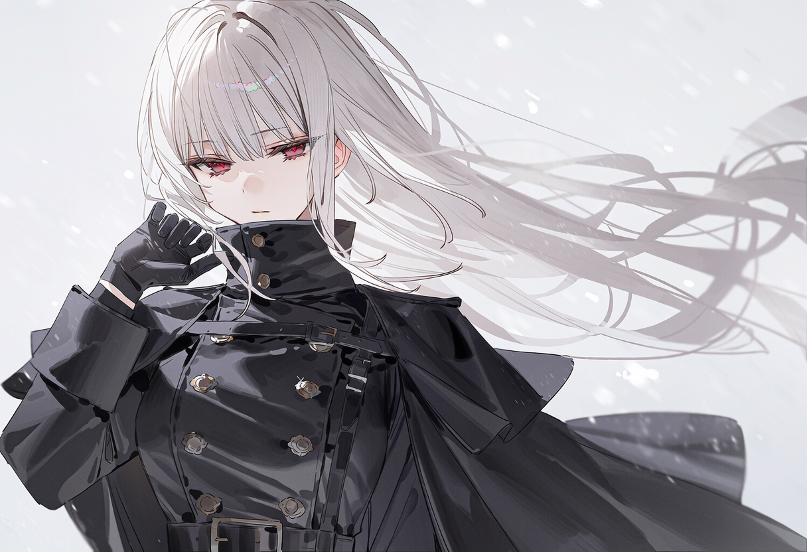

Eternal ·
Hunter
게이트가 열린 지 십 년. 도시는 평소처럼 굴러가고, 헌터들은 오늘도 등급과 목숨을 걸고 문을 닫는다.
Hunter Association헌터협회
게이트 승인, 등급 심사, 사고 수습. 모든 공략은 협회 서류 한 장에서 시작된다.
Four Guilds4대 길드
코트 색이 곧 소속이다. 같은 색을 입었다면 같은 문을 닫는 동료다.
나이·등급·이능·MBTI·소개는 임시로 넣은 설정이에요.
Villains빌런
협회 기록에서 얼굴만 남은 자들.
Access Denied빌런 5인의 기록은 곧 공개됩니다.
Rank헌터 등급
협회 심사로 매겨지며 1년마다 다시 측정한다.
S+국가 재난급. 등록자 1인
S단독 대형 게이트 공략
A길드 주전력
B공략대 주력
C공략대 보조
D지원·후방